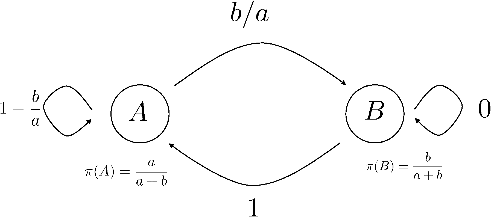
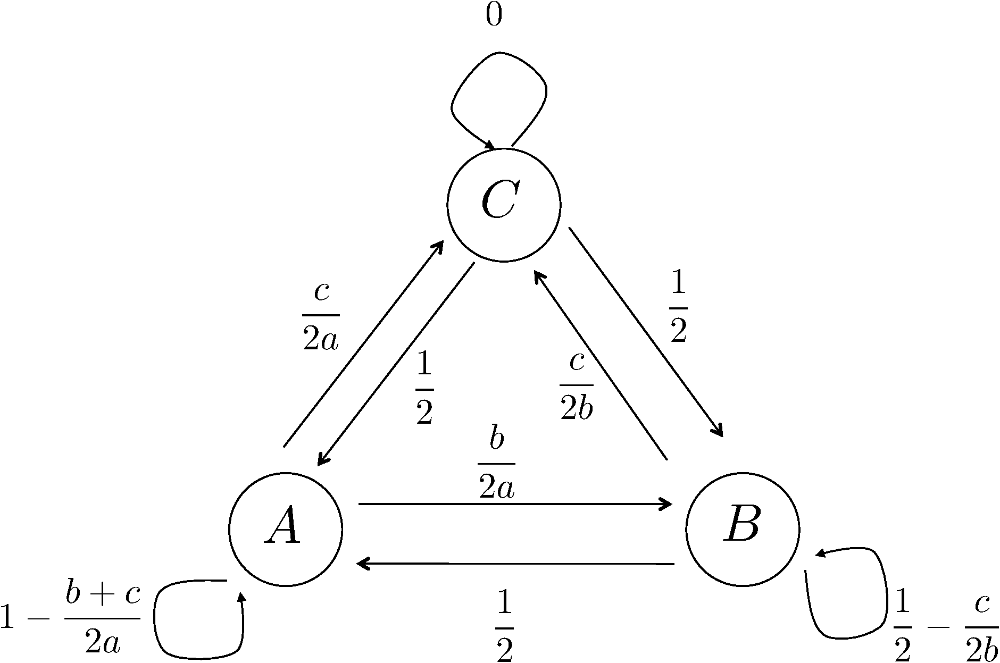
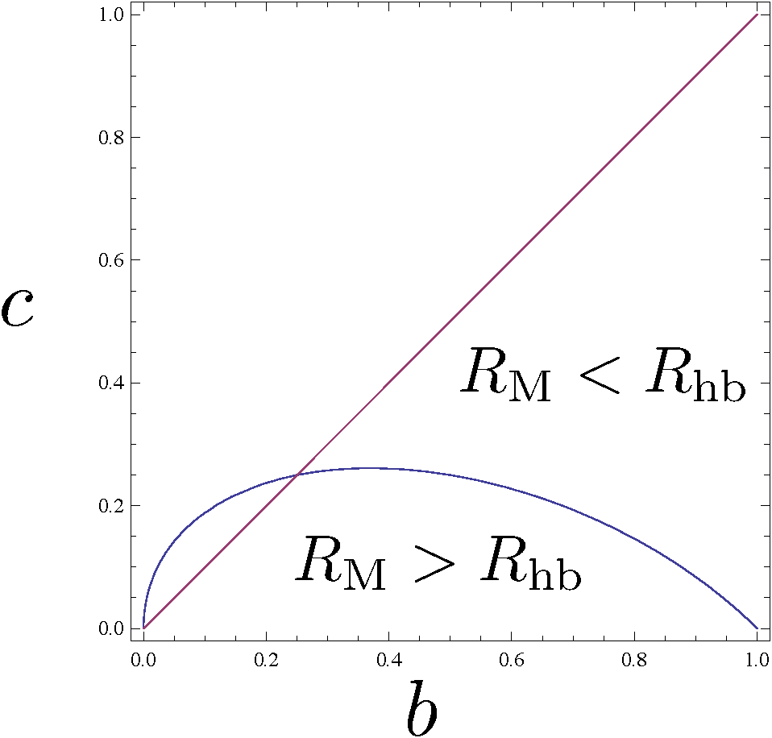

1 はじめに
マルコフ連鎖モンテカルロ法においては、最終的に平衡状態がボルツマン重みに比例していれば どのような遷移確率を用いても良いが、簡単のために詳細釣り合い条件を要請することが多い。 しかし、詳細釣り合い条件を課すだけでは、まだ遷移確率を決めることができない。 例えば二準位系では、遷移確率は4通り決める必要があるが、 確率の保存で2つ、詳細釣り合い条件で1つ、合計3つの条件があり、自由度が1つ残る。 三準位系では、遷移確率が9通りあり、拘束条件は確率の保存で3つ、詳細釣り合いで3つであるため、 自由度が3つ残る。一般に状態が増えれば増えるほど残る自由度が増えていき、 \(N\)個の状態がある系では\((N^2-N)/2\)個の自由度が残る。 この時、もっとも「良い」遷移確率の選び方はあるのだろうか？ よく使われるMetropolis法と熱浴法は、何かを最適化した結果得られる選択なのか？ そのあたりを調べるため、とりあえず二準位系と三準位系においてMetropolis法と熱浴法の棄却率を比較してみた。

2 二準位系の場合
状態\(A\)、\(B\)の二準位系を考える。それぞれのエネルギーを\(E_A\)、\(E_B\)とし、 逆温度を\(\beta\)とする。ここで、\(E_A < E_B\)としても一般性を失わない。 \[\begin{aligned} a &\equiv \exp(-\beta E_A)\\ b &\equiv \exp(-\beta E_B) \end{aligned}\] と略記すると、それぞれの平衡状態での存在確率\(\pi(A)\)、\(\pi(B)\)は、 \[\begin{aligned} \pi(A) &= \frac{a}{a+b}\\ \pi(B) &= \frac{b}{a+b} \end{aligned}\] と表される。なお、\(E_A < E_B\)より、\(a>b\)である。 さて、平衡状態における棄却確率を考える。 平衡状態における棄却確率\(R\)とは、一ステップ後に現在の状態にとどまる確率、すなわち \[R \equiv \sum_X^{A,B} \pi(X) P(X \rightarrow X)\] として定義する。ただし\(P(X \rightarrow Y)\)は状態\(X\)から状態\(Y\)への遷移確率とする。 Metroplis法の場合、棄却確率\(R_\mathrm{M}\)は \[\begin{aligned} R_\mathrm{M} &= \left(1 -\frac{b}{a}\right) \frac{a}{a+b} \\ &= \frac{a-b}{a+b} \end{aligned}\] である(図1参照)。 熱浴法の場合、新しい状態は現在の状態に関係なく、平衡状態での存在確率\(\pi\)に比例して決まる。 したがって、棄却確率\(R_\mathrm{hb}\)は \[\begin{aligned} R_\mathrm{hb} &= \pi(A)^2 +\pi(B)^2\\ &= \frac{a^2+b^2}{(a+b)^2} \end{aligned}\] となる。ここで、状態\(A\)のエネルギー\(E_A\)を原点に取り直す(\(E_A=0\)とする)。 すると\(a=1\)となるので、 \[\begin{aligned} R_\mathrm{M} &= \frac{1-b}{1+b} \\ R_\mathrm{hb} &= \frac{1+b^2}{(1+b)^2} \end{aligned}\] したがって、 \[R_\mathrm{hb} - R_\mathrm{M} = \frac{2 b^2}{(1+b)^2} >0\] つまり、Metropolis法よりも、熱浴法のほうが常に棄却率が高いことがわかる。 一般に、二準位系においては、詳細釣り合い条件を満たす範囲においては Metroplis方がもっとも平均棄却率が低いことを証明できる。

3 三準位系の場合
三準位系でも同様に棄却率を計算してみる。 状態は\(A, B, C\)とし、\(E_A < E_B < E_C\)とする。 二準位系と同様に重み\(a, b, c\)を導入すると。 Metroplis法の場合の棄却確率\(R_\mathrm{M}\)は \[\begin{aligned} R_\mathrm{M} &= \left(1 -\frac{b+c}{2a} \right) \pi(A) + \left(\frac{1}{2} - \frac{c}{2b} \right) \pi(B)\\ &= \frac{a-c}{a+b+c} \end{aligned}\] となる((図2参照))。 熱浴法では \[\begin{aligned} R_\mathrm{hb} &= \pi(A)^2 +\pi(B)^2 + \pi(C)^2\\ &= \frac{a^2+b^2+c^2}{(a+b+c)^2} \end{aligned}\] 二準位系と同様に状態\(A\)のエネルギーを原点に取り直し(\(a=1\))、棄却率の差を計算すると \[R_\mathrm{hb} - R_\mathrm{M} = \frac{b^2 + (c-1) b + 2 c^2}{(1+b+c)^2}\] この値は、\(b\)と\(c\)の値により正にも負にもなる。したがって、熱浴法とMetropolis法のどちらが 棄却率が低いかは条件に依存する(図3)。

4 考察
遷移確率は詳細釣り合い条件だけでは決まらないため、そこに自由度が存在する。 二準位系においては、「平衡状態における棄却率を最小化する」という要請により Metropolis法が選ばれるが、三準位以上の系においては、熱浴法とMetropolis法の どちらが棄却率が低いかは条件に依存する。 また、三準位以上の系においては熱浴法、Metropolis法のどちらよりも 棄却率の低い遷移確率の決め方があるのかもしれないし、 実は熱浴法かMetropolis法のどちらかになってしまうのかもしれないが、 面倒なのでまだ計算していない。
5 Appendix
一般に\(N\)状態のMetropolis法の棄却率は \[R = \frac{1}{N-1}\sum_{k=1}^N (N+1-2k) \pi_k\] で、熱浴法の平均棄却率は \[R = \sum_{k=1}^N \pi_k^2\] で与えられる。